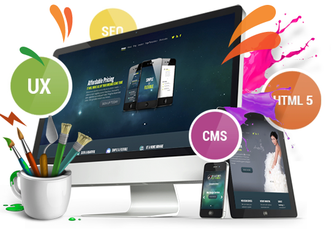

WebDesign
we have an eye on the future of design. Our focus on igniting audience interest generates profound
business
results. Implementing cutting-edge design and advanced content strategy, we capture and keep your
target
audience’s attention.
Website Design & Development
Your website is your online shop window. The design, look, and feel of your website are as crucial to
your business success because it shows off not just your stock or services, but also embodies your company’s
business values and goals. We build modern, mobile responsive and SEO-friendly websites using the most
current web design and development techniques.
Professional Web Design
Whether your company or organization needs a new website and web presence, or a redesign, restructuring,
and upgrade of the current one, Design It Up Now can help. Our websites are created from scratch using
cutting-edge, high-quality design techniques. Our in-house team of creative experts provides all the
necessary creative aspects to our wide range of website design services.

Website Design Features
First impressions are lasting impressions. To be successful online, you need a custom designed website
that is consistent with the look and feel of your industry but also has that special uniqueness that is you
and your company. When we create our websites, we incorporate simplicity. We deliver content in the most
efficient, clean, and elegant way possible. When we drive traffic and potential clients to your website, the
website must be able to convert them to paying clients. Our websites are clear and easy to use so your
clients are willing to stay on the site, use it, and keep coming back.
We work on a vast number of different web design platforms. If you can think it, we can build it. Here are
just some of the web design and development services we offer: